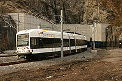
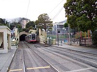
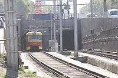

Скоростной трамвай в Нью-Джерси, США

Muni Metro в Сан-Франциско.

Скоростной трамвай в Волгограде.
Скоростной трамвай — разновидность легкорельсового транспорта, регулярный скоростной внеуличный преимущественно наземный рельсовый вид городского транспорта (современный).
Частично подземный скоростной трамвай, имеющий подземные станции в центре города, в России иногда называют метротрамом.
От обычного трамвая отличается обособленным от уличного дорожного полотна расположением линий, большей длиной перегонов, высокой скоростью и, как правило, большей составностью, что позволяет обеспечивать бо́льшую провозную способность чем у традиционного трамвая: до 20 тысяч пассажиров в час против 10 тысяч.
Благодаря полной изоляции линии скоростного трамвая от уличного дорожного полотна, её функционирование не зависит от автомобильных пробок, а скорость передвижения пассажира по городу может быть не ниже скорости поездки на метро, так как пассажир не тратит время на операции подъёма и спуска на подземную платформу.
Система скоростного трамвая в России действует в Волгограде (см. статью Волгоградский метротрам). Поскольку часть линии проходит под землёй и имеет подземные станции, аналогичные станциям метрополитена, эта система называется метротрамом.
В прошлые десятилетия в ряде городов (Саратов, Барнаул, Набережные Челны, Краснодар, Омск, Ангарск, Казань и др.) строились участки, похожие на скоростной трамвай, но они вошли в имевшиеся системы обычного трамвая и в ряде случаев были сведены к линиям обычного трамвая.
Также в ряде городов проектировались линии скоростного трамвая (Ленинград, Иркутск, Курск, Ярославль, Чебоксары, Тольятти и др.) и метротрама (Челябинск, Пермь, Ростов-на-Дону[1], Тула; позже проекты метротрамов, кроме Тульского, были преобразованы в метрополитены).
Ныне линии метротрама проектируются в Барнауле, Саратове, скоростного трамвая — в Москве (Московский скоростной трамвай), Санкт-Петербурге (т.н. «надземный экспресс»), Екатеринбурге[2], Иркутске, Казани (Казанский скоростной трамвай), Липецке, Белгороде, Кирове, Пензе, Чебоксарах, Туле, Орле и др., а в Воронеже и Ульяновске — близкая легкорельсовая система легкое метро.
Ныне в Вильнюсе и Таллине вновь проектируются линии метротрама, в Астане - система LRT, близкая к скоростному трамваю и лёгкому метро.